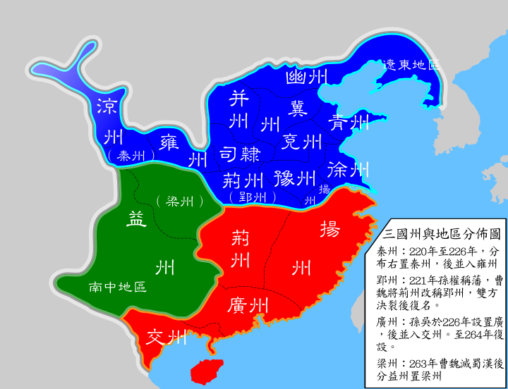

The Records of the Three Kingdoms is a Chinese historical text which covers the history of the late Eastern Han dynasty (c. 184–220 AD) and the Three Kingdoms period (220–280 AD).
It is widely regarded as the official and authoritative source historical text for that period. Written by Chen Shou in the third century, the work synthesizes the histories of the rival states of Cao Wei, Shu Han and Eastern Wu in the Three Kingdoms period into a single compiled text. The Records of the Three Kingdoms is the main source of influence for the 14th century historical novel Romance of the Three Kingdoms,
considered one of the great four novels of Chinese classical literature.Major chunks of the records have been translated into English, but the tome has yet to be fully translated.